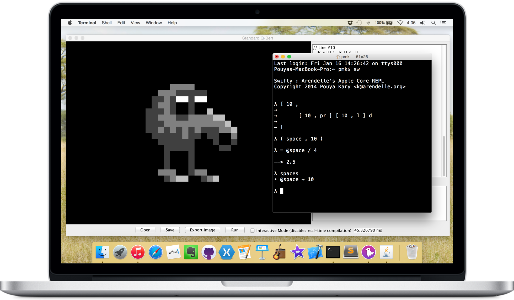

Welcome
Welcome! Arendelle language - including all the back-ends, front-ends and plug-ins - is a two man approach. We have created several awesome native back-ends based on our special compiler technology. We have created native user interfaces, fully integrated with our back-ends, we have created several third-party apps and programs to increase the possibilities of the language and so. With all those tools, kits and documentations you can develop applications based on Arendelle, You can help us make the language more awesome. So if you're interested in making the worlds most creative language more fun you're very welcome!
Back-Ends
We have developed three totally separate Arendelle compiler - so called back-end - so we can have Arendelle on any platform. We have 3 engines for Java, Apple and .NET platforms. They are well documented and easy to integrate into new systems. You can easily start creating your Arendelle powered application right now!
Arendelle Kit
Arendelle Kit is a set of tools for developers and Arendelle masters for some special tasks, Like highlighting code for websites, creating text in Arendelle and so. You can find this tools.
Developer Tools
To develop Arendelle software, Best choice is our official IDEs for phones and desktops, They are designed to make developing Arendelle codes super easy and fun but however in some places when you're developing the cores of Arendelle and so you need tools to develop the cores. Each of our cores comes with an interface for developing the core itself.

Get Involved
Arendelle is an open source project because we believe in freedom and community effort however the main reason why it’s open is that a language for creativity needs to be open so more people make more awesome things with it. We believe keeping Arendelle the way it is makes it more natural, but improving the engines and using the code to write kit applications are always needed. So if you feel like you love Arendelle, You're very welcome to help us. and fork our codes and create new awesome things! You can find us from GitHub